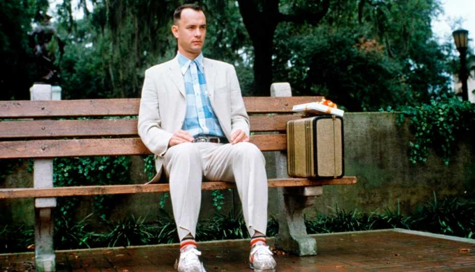
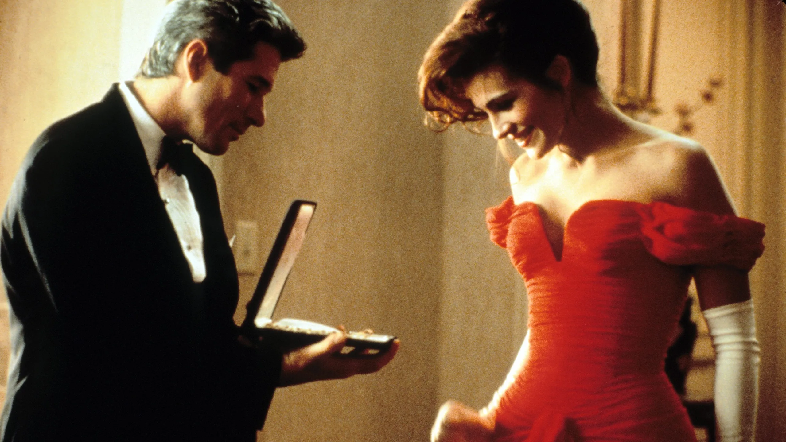
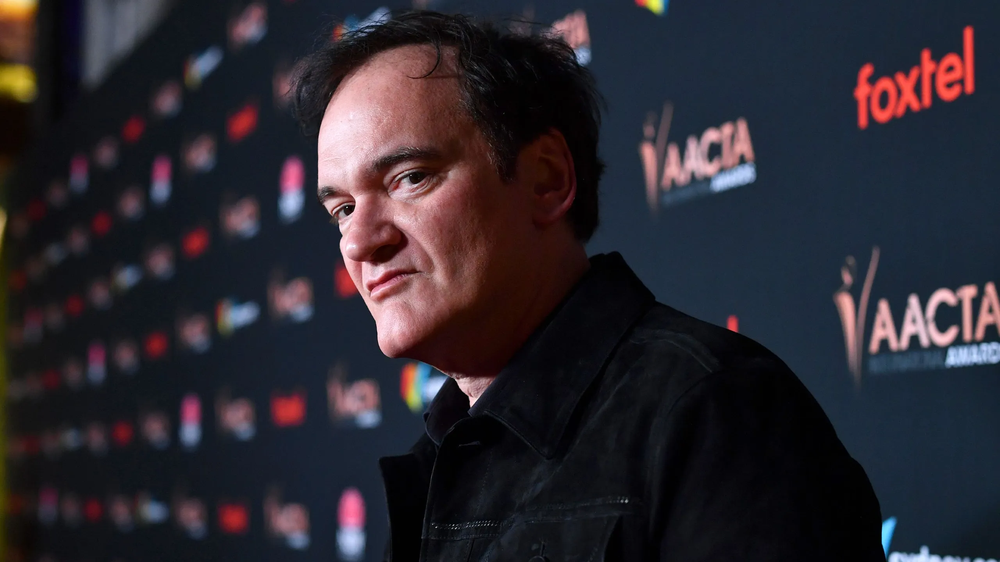
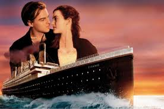

Péliculas noventeras
El joven Manos de tijera (1991)–Tim Burton:La que nos enseñó que las historias de amor también pueden ser únicas, diferentes, extrañas y mágicas. Uno de los productos más imaginativos del cine fantástico y una de las mejores películas de Tim Burton, que partió de arquetipos clásicos para construir una inteligente fábula.

Forrest Gump (1993) - Robert Zemeckis:La que te enseñó que la vida es como una caja de bombones: nunca sabes lo que te vas a encontrar. Es una de las mejores películas de Tom Hanks, y la que le consiguió un puesto (por segunda vez) en la lista de actores ganadores del Oscar..
Pretty woman (1990) – La rom-com más exitosa de todos los tiempos. Es increíble como su carisma y encanto ha sobrevivido al paso del tiempo y forma parte imprescindible de la cultura popular. Una reinvención del cuento de ‘Cenicienta’ con prostitutas, empresarios millonarios y óperas. Una de las mejores películas de Julia Roberts.
La lista de Schindler (1993) – Steven Spielberg:La que demostró que Steven Spielberg no sólo era el rey del cine popular para todas las edades, sino también un autor capaz de estremecernos hasta el último hueso del cuerpo. Basándose en la historia real de Oskar Schindler, el cineasta firmó uno de los retratos más crudos del Holocausto.
Personajes
Quentin Tarantino: Quentin Tarantino ha sido considerado por décadas como uno de los reyes del cine, no solo porque sus películas resulten siendo un gran éxito, sino porque además tiene la increíble capacidad de lograr que sus espectadores siempre reconozcan sus cintas sin importar el giro inesperado que les dé a sus géneros..
“Julia stiles: Stiles interpreta a Nicky Parsons en la saga Bourne y quizás sea la que tenga una carrera más notable de los que componen esta lista, pero muchos aún la recuerdan únicamente por ser Kat Stratford en 10 cosas que odio de ti.

“David Fincher: David Andrew Leo Fincher es un director y productor estadounidense de cine, televisión y vídeos musicales. Renombrado por su estilo visual, sus historias psicológicas y su capacidad para crear tensión, con películas como “Seven”, “Fight Club” y “The Social Network”. ”.
Datos curiosos de películas
La icónica escena de Clueless en la que asaltan a Cher y duda tirarse al suelo porque lleva un vestido Alaïa está inspirada en algo que realmente ocurrió.

En una de las primeras versiones de El rey león, Scar terminaba criando a Simba (después de matar a Mufasa).
James Cameron no quería que “My Heart Will Go On” apareciera en Titanic, pues consideraba que la película era demasiado épica y no necesitaba una canción pop.
